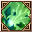
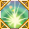
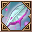
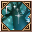
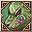
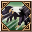
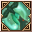

Loading...
Items
Weapons
Sword
Hammer
Axe
Two-Handed Sword
Two-Handed Hammer
Two-Handed Axe
Bow
Firearm
Relic
Staff
Shield
One-Handed Mecha Weapon
Two-Handed Mecha Weapon
Artillery
Arrows
Shells
Crystal
Katana
Armor
Head
Body
Legs
Hands
Feets
Back
Accesory
Backpack
Special Equipment
One-Handed Equipment
Two-Handed Equipment
Headgear
Back
Body
Talents Items
Talent Card
Talent Plane
Talent Fragment
Talent Skill
Power Stone
Sprite
Sprite
Jug Monster
Backpack
Sprite Island Formule
Sprite Island Breeding
Sprite Island Recipes
Sprite Island Buildings
Sprite Customes
Sprite Workbench
Sprite Emblem
Skill Book(Novice)
Skill Book(Intermediate)
Skill Book(Advanced)
Supplies
Mining
Foraging
Hunting
Crafting Ingredients
Piedras de Equipo
Gem Stone
Rune Stone
Resonance Stone
Nucleus
Mounts
Thrones
Comb Talents
Berserker
Paladin
Ranger
Assassin
Cleric
Sage
Wizard
Necromancer
Enginer
Demolitionist
Void Runner
Time Traveler
Quest
Titles
Skills
Berserker
Paladin
Ranger
Assassin
Cleric
Sage
Wizard
Necromancer
Enginer
Demolitionist
Void Runner
Time Traveler
Sprites
Portuguese
English
Spanish
Portuguese
French
Suggestions
Contact Us
Credits
Make Alchemy
F.A.Q
Time
00
:
00
:
00
Emissaries Timer
<Avatar do Emissário>Anunciador da Luxúria
Floresta Antiga (X:290, Y:370) Monday 20:35
<Emissário Lunático> Loucura da Luxúria
Vale dos Cavaleiros (X:510.53, Y:619.852) Monday 20:35
<Emissário Pesadelo> Ladona Voraz
Arena de Combate do território ilusório (X:134.088, Y:347.754) Monday 15:30
Emissário Antigo Justiça
Vale dos Espíritos (X:439.138, Y:559.115) Monday 20:30
<Emissário Ilusionista> Alpha Yen
Aldeia Aura Ilusória (X:639.151, Y:232.943) Monday 15:30
<Emissário Ilusionista> Iota Zhong
Passagem da Chama de Fogo Congelante (X:534.548, Y:578.733) Monday 20:30
Skills Sage
Skills
Passive Skills
Name
Level
Effect
Julgamento Brilhante 1
Skills
×
Julgamento Brilhante 1
Julgamento Brilhante 2
Julgamento Brilhante 3
Julgamento Brilhante 4
Julgamento Brilhante 5
Julgamento Brilhante 6
Julgamento Brilhante Reforçado 1
Julgamento Brilhante Reforçado 2
Julgamento Santo 1
Julgamento Sagrado 2
6
Info
Oração de Cura 1
Skills
×
Oração de Cura 1
Oração de Cura 2
Oração de Cura 3
Oração de Cura 4
Oração de Cura 5
Oração de Cura 6
6
Info
Chama da Glória 1
Skills
×
Chama da Glória 1
Chama da Glória 2
Chama da Glória 3
Chama da Glória 4
Chama da Glória 5
Chama da Glória 6
Impacto do Espírito Sagrado 1
Impacto do Espírito Sagrado 2
Golpe do Espírito Santo 1
Sopro Espírito Sagrado 2 <br>
6
Info
Guarda Leve 1
Skills
×
Guarda Leve 1
Guarda Leve 2
Guarda Leve 3
Guarda Leve 3
Guarda Leve 4
Guarda Leve 4
Guarda Leve 5
Guarda Leve 5
Guarda Leve 6
Guarda Leve 6
6
Info
Oração de Ressurreição 1
Skills
×
Oração de Ressurreição 1
Oração de Ressurreição 2
Oração de Ressurreição 3
8
Info
Remoção de Veneno 1
Skills
×
Remoção de Veneno 1
Remoção de Veneno 2
Remoção de Veneno 3
Remoção de Veneno 4
Remoção de Veneno 5
Remoção de Veneno 6
Remoção de Veneno 7
10
Info
Corpo Purificado 1
Skills
×
Corpo Purificado 1
Corpo Purificado 2
Corpo Purificado 3
Corpo Purificado 4
Corpo Purificado 5
Corpo Purificado 6
Corpo Purificado 7
10
Info
Matador de Maldição 1
Skills
×
Matador de Maldição 1
Matador de Maldição 2
Matador de Maldição 3
Matador de Maldição 4
Matador de Maldição 5
Matador de Maldição 6
Matador de Maldição 7
10
Info
Verdadeira Palavra do Escudeiro 1
Skills
×
Verdadeira Palavra do Escudeiro 1
A Verdadeira Palavra do Guardião 2
A Verdadeira Palavra do Guardião 3
16
Info
Bênção da Restauração 1
Skills
×
Bênção da Restauração 1
Bênção da Restauração 2
Bênção da Restauração3
Bênção da Restauração 4
16
Info
Golpe de Poeira 1
Skills
×
Golpe de Poeira 1
Golpe de Poeira 2
Golpe de Poeira 3
Golpe de Poeira 4
31
Info
Serenata de Lâmina Veloz 1
Skills
×
Serenata de Lâmina Veloz 1
Serenata de Lâmina Veloz 2
Serenata de Lâmina Veloz 3
Serenata de Lâmina Veloz 4
Serenata de Lâmina Veloz 5
Serenata de Lâmina Veloz 6
Serenata de Lâmina Veloz 7
Serenata de Lâmina Veloz 8
Serenata de Lâmina Veloz 9
Serenata de Lâmina Veloz à Distância 1
Serenata de Lâmina Veloz à Distância 2
Serenata de Lâmina Veloz à Distância 3
Serenata de Lâmina Veloz a Distância 4
Serenata de Lâmina Veloz à Distância 5
Lâmina Forte e Rápida 1
Lâmina Forte e Rápida 2
Lâmina Forte e Rápida 3
Lâmina Forte e Rápida 4
31
Info
Ira da Natureza 1
Skills
×
Ira da Natureza 1
Ira da Natureza 2
Ira da Natureza 3
Ira da Natureza 4
Ira da Natureza 5
Ira da Natureza 6
Ira da Natureza 7
Ira da Natureza 8
Fúria da Terra 9
Urro da Fúria do Mundo 1
Urro da Fúria do Mundo 2
Urro da Fúria do Mundo 3
Uivo da Fúria Mundial 4
Fúria de Gaia 5
Terra Separada 1
Terra Separada 2
Terra Separada 3
Terra Separada 4
31
Info
Forma de Grande Águia 1
Skills
×
Forma de Grande Águia 1
Forma de Grande Águia 2
Forma de Grande Águia 3
Forma de Grande Águia 4
Forma de Grande Águia 5
Forma de Grande Águia 6
Forma de Falcão 1
Forma de Falcão 2
31
Info
Folha ao Vento 1
Skills
×
Folha ao Vento 1
Folha ao Vento 2
Folha ao Vento 3
Folha ao Vento 4
Folha Alta ao Vento 1
Grande Folha ao Vento 2
Grande Folha ao Vento 3
31
Info
Dardo de Pluma 1
Skills
×
Dardo de Pluma 1
Dardo de Pluma 2
Dardo de Pluma 3
Dardo de Pluma 4
Dardo de Pluma 5
Dardo de Pluma 6
Dardo de Pluma 7
Dardo de Pluma 8
Dardo de Pluma 9
Dardo de Asas Múltiplas 1
Dardo de Asas Múltiplas 2
Dardo de Asas Múltiplas 3
Dardo de Asas Múltiplas 4
Dardo de Asas Múltiplas 5
Flecha Afiada Multi-Asas 1
Flecha Afiada Multi-Asas 2
Flecha Afiada Multi-Asas 3
Flecha Afiada Multi-Asas 4
31
Info
Dardo Asa Roc 1
Skills
×
Dardo Asa Roc 1
Dardo Asa Roc 2
Dardo Asa Roc 3
Dardo Asa Roc 4
Dardo Asa Roc 5
Dardo Asa Roc 6
Dardo Corrente de Pluma 1
Dardo Corrente de Pluma 2
Dardo Corrente de Pluma 3
Flecha Confinada 1
Flecha Confinada 2
31
Info
Aperto da Terra
Skills
×
Aperto da Terra
32
Info
Sopro da Natureza 1
Skills
×
Sopro da Natureza 1
Sopro da Natureza 2
Sopro da Natureza 3
Sopro da Natureza 4
Sopro da Natureza 5
Sopro da Natureza 6
Sopro da Natureza 7
Sopro da Natureza 8
Sopro da Natureza 9
Cura da Natureza 1
Cura da Natureza 2
Cura da Natureza 3
Bênção Natural 1
Bênção Natural 2
Bênção Natural 3
32
Info
Reparo do Espírito1
Skills
×
Reparo do Espírito1
Reparo do Espírito 2
Reparo do Espírito 3
Reparo do Espírito 4
Reparo do Espírito 5
Reparo do Espírito6
Reparo do Espírito 7
Reparo do Espírito 8
Reparo do Espírito 9
Alta Cura Espiritual 1
Alta Cura Espiritual 2
Alta Cura Espiritual 3
Toque da Vida 1
Toque da Vida 2
Toque da Vida 3
32
Info
Dança do Fantoche 1
Skills
×
Dança do Fantoche 1
Dança do Fantoche 2
Dança do Fantoche 3
Dança do Fantoche 4
Dança do Fantoche 1
Dança do Fantoche 2
Dança do Fantoche 3
32
Info
Ventos Tropicais 1
Skills
×
Ventos Tropicais 1
Ventos Tropicais 2
Ventos Tropicais 3
Ventos Tropicais 4
Ventos Tropicais 5
Ventos Tropicais 6
Ventos Tropicais 7
Ventos Tropicais 8
Ventos Tropicais Reforçados 1
Ventos Tropicais Reforçados 2
Ventos Tropicais Reforçados 3
Proteção do Espírito do Falcão 1
Proteção do Espírito do Falcão 2
32
Info
Fonte de Mana 1
Skills
×
Fonte de Mana 1
Fonte de Mana 2
Fonte de Mana 3
Fonte de Mana 4
Fonte de Mana 5
Fonte Sagrada de Mana 1
Fonte Sagrada de Mana 2
Fonte de Mana Eterna 3
Fonte de Maná Eterna 4
Fonte de Maná Eterna 5
32
Info
Forma de Lobo Sombrio 1
Skills
×
Forma de Lobo Sombrio 1
Forma de Lobo Sombrio 2
Forma de Lobo Sombrio 3
Forma de Lobo Sombrio 4
Forma da Fúria do Lobo das Sombras 1
Forma da Fúria do Lobo das Sombras 2
34
Info
Presas Dilacerantes 1
Skills
×
Presas Dilacerantes 1
Presas Dilacerantes 2
Presas Dilacerantes 3
Presas Dilacerantes 4
Presas Dilacerantes 5
Presas Dilacerantes 6
Presas Dilacerantes 7
Presas Dilacerantes 8
Preocupação Insana 1
Preocupação Insana 2
Preocupação Insana 3
Preocupação Louca 4
Preocupação Louca 5
Rasgo Selvagem 1
Rasgo Selvagem 2
Rasgo Selvagem 3
Rasgo Selvagem 4
34
Info
Golpe de Graça 1
Skills
×
Golpe de Graça 1
Golpe de Graça 2
Golpe de Graça 3
Golpe de Graça 4
Golpe de Graça 5
Golpe de Graça 6
Golpe de Graça 7
Golpe de Graça 8
Golpe Letal 1
Golpe Letal 2
Golpe Letal 3
Golpe Mortal 4
Golpe Mortal 5
Ataque Letal 1
Ataque Letal 2
Ataque Letal 3<br>
Ataque Letal 4
34
Info
Bênção da Rosa 1
Skills
×
Bênção da Rosa 1
Bênção da Rosa 2
Bênção da Rosa 3
Bênção da Rosa 4
Bênção da Rosa 5
Bênção da Rosa de Cristal 1
Bênção da Rosa de Cristal 2
Bênção da Rosa de Cristal 3
Chifres de Cristais 1
Chifres de Cristais 2
36
Info
Predador Silencioso1
Skills
×
Predador Silencioso1
Predador Silencioso 2
Predador Silencioso 3
Alto Nível de Discrição 1
Alto Nível de Discrição 2
36
Info
Emboscada Breve 1
Skills
×
Emboscada Breve 1
Emboscada Breve 2
Emboscada Breve 3
Emboscada Breve 4
Emboscada Breve 5
Emboscada Breve 6
Emboscada Breve 7
Emboscada Breve 8
Ataque Breve 1
Ataque Breve 2
Emboscada 3
Ataque Breve 4
Ataque Breve 5
Ataque da Fúria do Lobo 1
Ataque da Fúria do Lobo 2
Ataque da Fúria do Lobo 3
Ataque da Fúria do Lobo 4
36
Info
Choque Mental 1
Skills
×
Choque Mental 1
Choque Mental 2
Choque Mental 3
Choque Mental 4
Choque Mental 5
Impacto Mental 4
Choque Mental 6
Choque Mental 7
Impacto Mental 1
Impacto Mental 2
Impacto Mental 3
Impacto Mental 5
Ataque Gorila 1
Ataque Gorila 2

Ataque Gorila 3
Ataque Gorila 4
38
Info
Tempestade de Areia 1
Skills
×
Tempestade de Areia 1
Tempestade de Areia 2
Tempestade de Areia 3
Tempestade de Areia 4
Tempestade de Areia 5
Tempestade de Areia 6
Tempestade de Areia 6
Tempestade de Areia 1
Tempestade de Areia 2
Tempestade de Areia 3
Tempestade de Areia 4
Tempestade do Deserto 5
Tornado de Areia 1
Tornado de Areia 2
Tornado de Areia 3
Tornado de Areia 4
38
Info
Forma de Gorila Gigante 1
Skills
×
Forma de Gorila Gigante 1
Forma de Gorila Gigante 2
Forma de Gorila Gigante 3
Forma de Gorila Gigante 4
Forma de Gorila Gigante 5
Forma de Gorila Selvagem 1
Forma de Gorila Selvagem 2
38
Info
Ira do Gorila Gigante 1
Skills
×
Ira do Gorila Gigante 1
Ira do Gorila Gigante 2
Ira do Gorila Gigante 3
Ira do Gorila Gigante 4
Ira do Gorila Gigante 5
Ira Intensa do Gorila Gigante 1
Ira do Gorila Gigante 2
Ira do Gorila Gigante Alta 3
Ira do Gorila Gigante Alta 4
Ira do Gorila Gigante Alta 5
38
Info
Grito de Guerra 1
Skills
×
Grito de Guerra 1
Grito de Guerra 2
Grito de Guerra 3
Grito de Guerra 4
Grito de Guerra Melhorado 1
Grito de Guerra Aprimorado 2
Grito do Gorila Gigantesco 1
Grito do Gorila Gigantesco 2
38
Info
Natureza Generosa 1
Skills
×
Natureza Generosa 1
Natureza Generosa 2
Natureza Generosa 3
Natureza Generosa 4
Natureza Generosa 5

Generosidade da Natureza Melhorada 1
Natureza Generosa Melhorada 2
Graça da Natureza 1
Graça da Natureza 2
40
Info
Onda Poderosa 1
Skills
×
Onda Poderosa 1
Onda Poderosa 2
Onda Poderosa 3
Onda Poderosa 4
Onda Poderosa 5
Onda Poderosa 6
Onda Poderosa 7
Onda Poderosa Sombria 1
Onda Poderosa Sombria 2
Onda Poderosa Sombria 3
Onda Poderosa Sombria 4
Onda Poderosa Sombria 5
Onda Poderosa Sombria 6
40
Info
Fúria da Batalha 1
Skills
×
Fúria da Batalha 1
Fúria da Batalha 2
Fúria da Batalha 3
Disposição para Matar 1
Disposição para Matar 2
Instintos Selvagens 1
Instintos Selvagens 2
40
Info
Bênção da Natureza 1
Skills
×
Bênção da Natureza 1
Bênção da Natureza 2
Bênção da Natureza 3
Bênção da Natureza 4
Bênção da Natureza 5
Bênção da Natureza 1
Bênção da Natureza 2
Proteção do Espírito do Lobo Selvagem 1
Proteção do Espírito do Lobo Selvagem 2
40
Info
Punho de Fúria Silvestre 1
Skills
×
Punho de Fúria Silvestre 1
Punho de Fúria Silvestre 2
Punho de Fúria Silvestre 3
Punho de Fúria Silvestre 4
Punho Silvestre 5
Soco da Selva 1
Soco da Selva 2
61
Info
Espinho Pena Alada 1
Skills
×
Espinho Pena Alada 1
Espinho Pena Alada 2
Espinho Pena Alada 3
Espinho Pena Alada 4
Picada de Asa de Pena 5
Picada de Asa de Pena 6
Espinho Pena Alada 7
Espinha Afiada 1
Espinha Afiada 2
Espinha Afiada 3
Espinha Afiada 4
61
Info
Rápido Como o Cair da Noite
Skills
×
Rápido Como o Cair da Noite
62
Info
Liberação Potencial
Skills
×
Liberação Potencial
66
Info
Escapou sem deixar rastros
Skills
×
Escapou sem deixar rastros
66
Info
Agitação Espiritual
Skills
×
Agitação Espiritual
66
Info
Canal Aberto 1
Skills
×
Canal Aberto 1
Canal Aberto 2
Canal Aberto 3
Canal Aberto 4
Canal Aberto 5
Cana Aberto 6
66
Info
Guarda Gorila 1
Skills
×
Guarda Gorila 1
Guarda Gorila 2
Guarda Gorila 3
Guarda Gorila 4
Guarda Gorila 5
67
Info
Flecha Letal 1
Skills
×
Flecha Letal 1
Flecha Letal 2
Flecha Letal 3
Flecha Letal 4
Flecha Letal 5
Flecha Letal 6
Flecha Letal 7
Flecha Letal 8
Flecha Letal 9
68
Info
Flecha Frágil 1
Skills
×
Flecha Frágil 1
Flecha Frágil 2
Flecha Frágil 3
Flecha Frágil 4
Flecha Frágil 5
Flecha Frágil 6

Flecha Frágil 7
Flecha Frágil 8
Flecha Frágil 9
68
Info
Rasgo Cruel 1
Skills
×
Rasgo Cruel 1
Rasgo Cruel 2
Rasgo Cruel 3
Rasgo Cruel 4
68
Info
Uivo da Fúria Mundial 2
Skills
×
Uivo da Fúria Mundial 2
70
Info
Pancada de Pulverizar 1
Skills
×
Pancada de Pulverizar 1
Pancada de Pulverizar 2
Pancada de Pulverizar 3
Pancada de Pulverizar 4
Pancada de Pulverizar 5
71
Info
Desastres dispersados
Skills
×
Desastres dispersados
74
Info
Escudo do Demônio
Skills
×
Escudo do Demônio
84
Info
Invocação Final da Árvore da Vida 1
Skills
×
Invocação Final da Árvore da Vida 1
Invocação Final da Árvore da Vida 2

Invocação Final da Árvore da Vida 3
Invocação Final da Árvore da Vida 4
86
Info
Rasgo Ligeiro 1
Skills
×
Rasgo Ligeiro 1
Rasgo Ligeiro 2
Rasgo Ligeiro 3
Rasgo Ligeiro 4
Rasgo Ligeiro 5
86
Info
Canção da Natureza 1
Skills
×
Canção da Natureza 1
Canção da Natureza 2
86
Info
Campo Lento
Skills
×
Campo Lento
91
Info
Espírito Mensageiro
Skills
×
Espírito Mensageiro
91
Info

Mordida de Lobo
Skills
×
Mordida de Lobo
91
Info
Raiva de Macaco
Skills
×
Raiva de Macaco
91
Info

Voo do Guardião
Skills
×
Voo do Guardião
91
Info
Escudo da Eternidade
Skills
×
Escudo da Eternidade
91
Info
Quebrador de Escudo
Skills
×
Quebrador de Escudo
91
Info
Name
Level
Effect
Alma Arrebentada a
Skills
×
Alma Arrebentada a
Alma Arrebentada ß
Alma Arrebentada ß
Alma Arrebentada d
6
Info
Chama da Glória Melhorada 1
Skills
×
Chama da Glória Melhorada 1
Chama da Glória Melhorada 2
Chama da Glória Melhorada 3
Chama da Glória Melhorada 4
Chama da Glória Melhorada 5
6
Info
Resistente à Mágica
Skills
×
Resistente à Mágica
6
Info
Restauração de Mana
Skills
×
Restauração de Mana
16
Info
Serenata de Lâmina Veloz Melhorada 1
Skills
×
Serenata de Lâmina Veloz Melhorada 1
Serenata de Lâmina Veloz Melhorada 2
Serenata de Lâmina Veloz Melhorada 3
Serenata de Lâmina Veloz Melhorada 4
Serenata de Lâmina Veloz Melhorada 5
31
Info
Ira da Natureza Melhorada 1
Skills
×
Ira da Natureza Melhorada 1
Ira da Natureza Melhorada 2
Ira da Natureza Melhorada 3
Ira da Natureza Melhorada 4
Ira da Natureza Melhorada 5
31
Info
Dardo Asa Roc Aperfeiçoado 1
Skills
×
Dardo Asa Roc Aperfeiçoado 1
Dardo Asa Roc Aperfeiçoado 2
Dardo Asa Roc Aperfeiçoado 3
Dardo Asa Roc Aperfeiçoado 4
Dardo Asa Roc Aperfeiçoado 5
31
Info
Golpe de Graça Incrementado 1
Skills
×
Golpe de Graça Incrementado 1
Golpe de Graça Incrementado 2
Golpe de Graça Incrementado 3
Golpe de Graça Incrementado 4
Golpe de Graça Incrementado 5
34
Info
Emboscada Breve Melhorada 1
Skills
×
Emboscada Breve Melhorada 1
Emboscada Breve Melhorada 2
Emboscada Breve Melhorada 3
Emboscada Breve Melhorada 4
Emboscada Breve Melhorada 5
36
Info
Tempestade de Areia Melhorada 1
Skills
×
Tempestade de Areia Melhorada 1
Tempestade de Areia Melhorada 2
Tempestade de Areia Melhorada 3
Tempestade de Areia Melhorada 4
Tempestade de Areia Melhorada 5
38
Info
Fúria da Batalha Melhorada 1
Skills
×
Fúria da Batalha Melhorada 1
Fúria da Batalha Melhorada 2
Fúria da Batalha Melhorada 3
Fúria da Batalha Melhorada 4
Fúria da Batalha Melhorada 5
40
Info
Onda Poderosa Incrementada 1
Skills
×
Onda Poderosa Incrementada 1
Onda Poderosa Melhorada 2
Onda Poderosa Melhorada 3
Onda Poderosa Incrementada 4
Onda Poderosa Incrementada 5
40
Info
Espinho Pena Alada Aperfeiçoado 1
Skills
×
Espinho Pena Alada Aperfeiçoado 1
Espinho Pena Alada Aperfeiçoado 2
Espinho Pena Alada Aperfeiçoado 3
Espinho Pena Alada Aperfeiçoado 4
Espinho Pena Alada Aperfeiçoado 5
61
Info

Natureza Sagrada 1
Skills
×
Natureza Sagrada 1
Natureza Sagrada 2
Natureza Sagrada 3
66
Info
Postura Provocadora 1
Skills
×
Postura Provocadora 1
Postura Provocadora 2
Postura Provocadora 3
66
Info
Sanção 1
Skills
×
Sanção 1
Sanção 2
Sanção 3
Sanção 4
Sanção 5
Sanção 6
66
Info
Serenata de Lâmina Veloz a Distância Melhorada 1
Skills
×
Serenata de Lâmina Veloz a Distância Melhorada 1
Serenata de Lâmina Veloz a Distância Melhorada 2
Serenata de Lâmina Veloz a Distância Melhorada 3
Serenata de Lâmina Veloz a Distância Melhorada 4
Serenata de Lâmina Veloz a Distância Melhorada 5
66
Info
Tempestade do Deserto Melhorada 1
Skills
×
Tempestade do Deserto Melhorada 1
Tempestade do Deserto Melhorada 2
Tempestade do Deserto Melhorada 3
Tempestade do Deserto Melhorada 4
Tempestade do Deserto Melhorada 5
66
Info
Uivo da Fúria Terrestre Aperfeiçoado 1
Skills
×
Uivo da Fúria Terrestre Aperfeiçoado 1
Uivo da Fúria Terrestre Aperfeiçoado 2
Uivo da Fúria Terrestre Aperfeiçoado 3
Uivo da Fúria Terrestre Aperfeiçoado 4
Uivo da Fúria Terrestre Aperfeiçoado 5
66
Info
Dardo Corrente de Pluma Aperfeiçoado 1
Skills
×
Dardo Corrente de Pluma Aperfeiçoado 1
Dardo Corrente de Pluma Aperfeiçoado 2
Dardo Corrente de Pluma Aperfeiçoado 3
Dardo Corrente de Pluma Aperfeiçoado 4
Dardo Corrente de Pluma Aperfeiçoado 5
66
Info
Golpe Mortal Incrementado 1
Skills
×
Golpe Mortal Incrementado 1
Golpe Mortal Incrementado 2
Golpe Mortal Incrementado 3
Golpe Mortal Incrementado 4
Golpe Mortal Incrementado 5
66
Info
Impacto do Espírito Sagrado Aperfeiçoado 1
Skills
×
Impacto do Espírito Sagrado Aperfeiçoado 1
Impacto do Espírito Sagrado Aperfeiçoado 2
Impacto do Espírito Sagrado Aperfeiçoado 3
Impacto do Espírito Sagrado Aperfeiçoado 4
Impacto do Espírito Sagrado Aperfeiçoado 5
68
Info
Ataque Breve Aperfeiçoado 1
Skills
×
Ataque Breve Aperfeiçoado 1
Ataque Breve Aperfeiçoado 2
Ataque Breve Aperfeiçoado 3
Ataque Breve Aperfeiçoado 4
Ataque Breve Aperfeiçoado 5
68
Info
Quebrador de Sombra Aperfeiçoado 1
Skills
×
Quebrador de Sombra Aperfeiçoado 1
Quebrador de Sombra Aperfeiçoado 2
Quebrador de Sombra Aperfeiçoado 3
Quebrador de Sombra Aperfeiçoado 4
Quebrador de Sombra Aperfeiçoado 5
68
Info
Canção de Massacre Melhorada 1
Skills
×
Canção de Massacre Melhorada 1
Canção de Massacre Melhorada 2
Canção de Massacre Melhorada 3
Canção de Massacre Melhorada 4
Canção de Massacre Melhorada 5
70
Info
Eu Sigo Rios 1
Skills
×
Eu Sigo Rios 1
Eu Sigo Rios 2
86
Info
Alma Pura 1
Skills
×
Alma Pura 1
Alma Pura 2
Alma Pura 3
Alma Pura 4
Alma Pura 5
86
Info
Instinto Primitivo 1
Skills
×
Instinto Primitivo 1
91
Info
Credits
×
Developers:
Kougami
EX GS Angelique
Collaborators:
EX GS Roshi
EX GS Marchel
Contact Us
×
Contact emails
admin@grandfantasia-db.com